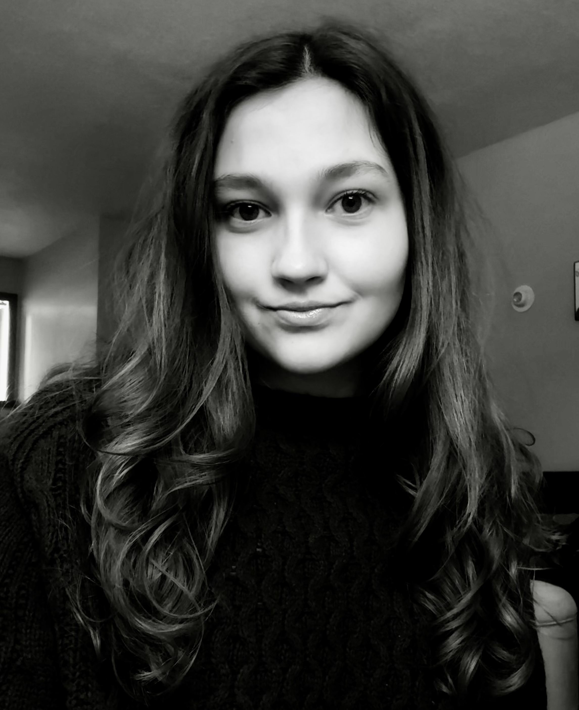

I am a Minnesota based mixed media artist with a focus on collage, creating landscapes, portraits and abstract art with paper, magazine clippings and other found materials. I am currently a senior at Minnesota State University Moorhead pursuing a B.F.A. in Art Education, minoring in Art Therapy and Art History and a certification in Book Illustration. My work has appeared in the Rum River Art Center’s ‘Trash to Treasure’ gallery show (2024), where I was awarded third place in the People's Choice Category. My work also appeared in the 2026 MSUM Student Juried Show, where I was awarded the President’s Award. I have a passion for traveling the world.I was able to study art history in multiple field experiences that took place in France,the Netherlands, Italy and Turkey. Observing the world me is what drives and inspires my creative work.